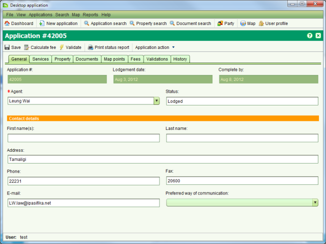

Application Details
The Application Details screen allows you to enter the details for a new application and/or
edit the details of an existing application. To create a new application, the Application
Details screen can be accessed from the Applications > New Applications menu or selecting
 .
.
To edit an application, select the application in the assigned or unassigned application
lists on the Dashboard and choose Edit. If the application is not displayed in the application
lists, use the Search Application screen to locate it and click the Edit button.
This will open the Application Details screen allowing you to edit the application details
and save changes

An application represents a bundle of services that will be undertaken by the land
administration agency, typically in response to a customer request. Each service may
result in changes to property information and/or associated rights. Details that can be
captured for an application are:
- Agent – An individual or a firm that is filing the application with the land
administration agency. Agent details are optional.
- Contact Person – The individual that can be contacted should the details of
the application require further elaboration or clarification.
A contact person must be identified with every application and will
usually be the applicant.
- Services – These broadly identify the actions the land administration agency
will undertake for the application. It is expected that each land administration
agency will configure services based around their existing practices. At least
one service must be added to each application.
- Property – The property or properties affected by the application. Property
details are optional for new applications, but may be required prior to starting
services depending on the services selected for the application. Note that SOLA Desktop
does not currently provide a Property Search facility, however the Object Information Tool
can be used to find existing property identifiers.
- Documents – The legal or other documents that explain and/or justify the reasons
for changing cadastre and registration records. Scanned images of documents should be attached
to the application for easy reference. Document details are optional; however there are
certain document types that are expected to accompany various services. The Required
Document Types list on the Documents tab identifies the types of documents that should
be included with the application given the services that have been selected.
- Fees – Identifies the fees payable to the land administration agency before the
application can proceed. This fee is currently based on the service and property
information recorded for the application and will be customized to satisfy specific
land administration agency needs. The fee is automatically calculated when a new
application is lodged. To perform fee calculation prior to lodgement, use the Calculate
fee tool in the Application Details toolbar. You can also print a receipt for the
application using the Print receipt tool. Note that SOLA does not currently provide
cashier functionality. For this reason a Paid checkbox is included on this tab to
allow you to flag the application fee as paid in order to assign the application.
- Map Points – Provides the SOLA Map Viewer along with the Locate Application
tools to allow you to identify the approximate location of the application.
Recording this information can help to identify other applications in close proximity
to the new application that could have a bearing on the new application or vice
versa. Optional.
- Validations – Displays the results of the automated business rules executed
when you choose to manually validate the application using the Validate action.
Validation is only available after the application has been lodged.
- History – Displays the history of actions applied to the
and its services. The actions that can be applied to applications and
services are described below. History details are only available after
the application has been lodged.
Also See